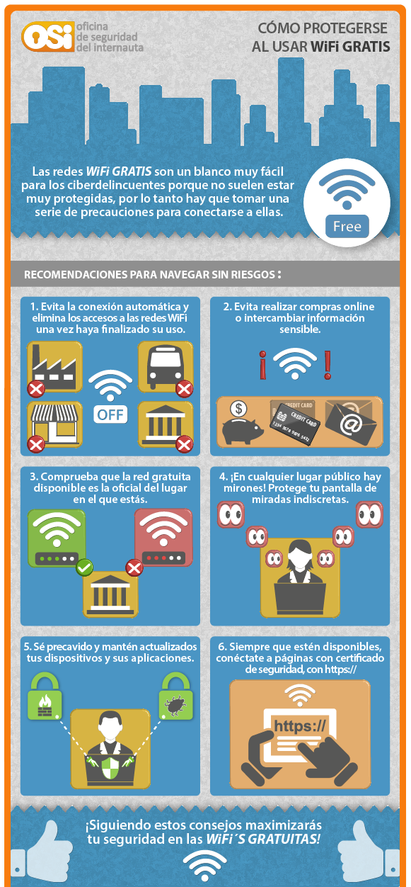

En la actualidad podemos encontrar redes wifi disponibles a nuestro alcance en cualquier sitio al que vamos, y también desde nuestros propios hogares o centros de trabajo disponemos de este tipo de redes cuya configuración es nuestra responsabilidad. La mayoría de centros escolares disponen de una red wifi, bien sea para el uso exclusivo del personal o que estén abiertas a los alumnos.
Estas redes también son objetivo de los ciberdelincuentes con el fin, entre otros, de robar información personal, infectar dispositivos o aprovecharse de la conexión de otra persona para realizar actividades ilegítimas. Por ello es importante saber securizar los router de nuestras redes y saber cuándo y cómo utilizar las redes wifi públicas.
Medidas de precaución en redes wifi públicas
¿Wifi gratis?, ¿Me conecto? En muchas ocasiones nos encontramos redes wifi gratuitas a las que podemos acceder sin restricciones, bien porque no tienen contraseña de acceso o porque es una contraseña conocida.
Ante la duda, mejor no conectarse y esperar a encontrar una red de confianza
Generalmente, estas redes tienen la finalidad de ofrecer un servicio de carácter público y gratuito como un bien a la comunidad de internautas. Pero hay que tener en cuenta que los ciberdelincuentes, en ocasiones, se aprovechan de esto con una finalidad malintencionada, como robar los datos de las personas que se conecten a la misma, o que el malware de un dispositivo infectado también conectado a la misma red wifi intente infectar nuestro equipo.
Es por ello que es importante tomar una serie de precauciones a la hora de conectarse a este tipo de redes wifi para poder disfrutar de nuestra navegación con tranquilidad. Aplicando unas recomendaciones muy sencillas que te mostramos a continuación podemos estar relajados a la hora de conectarnos a una red wifi de acceso público.
Infografía: «Cómo protegerse al usar wifi gratis»

Fuente: OSI-INCIBE